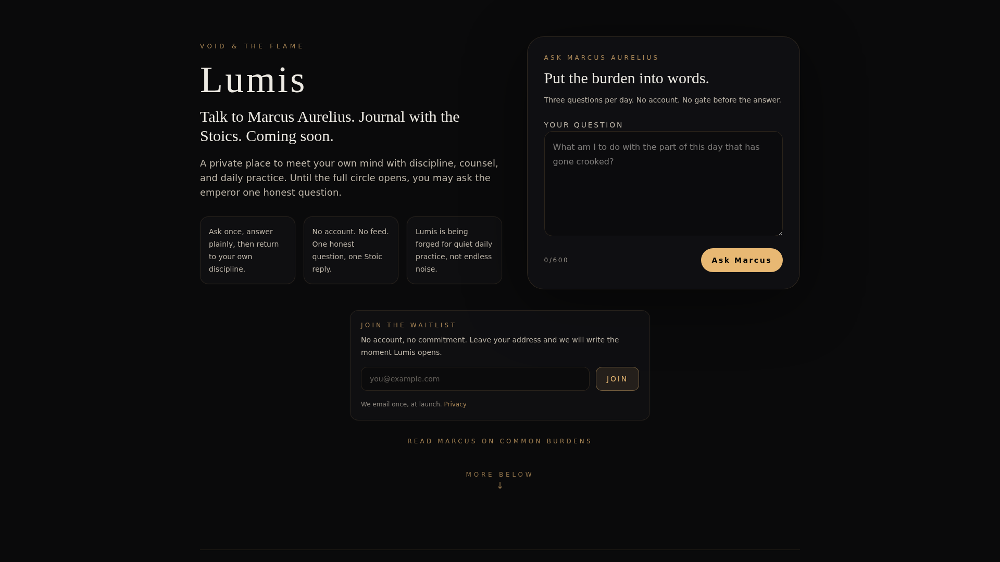
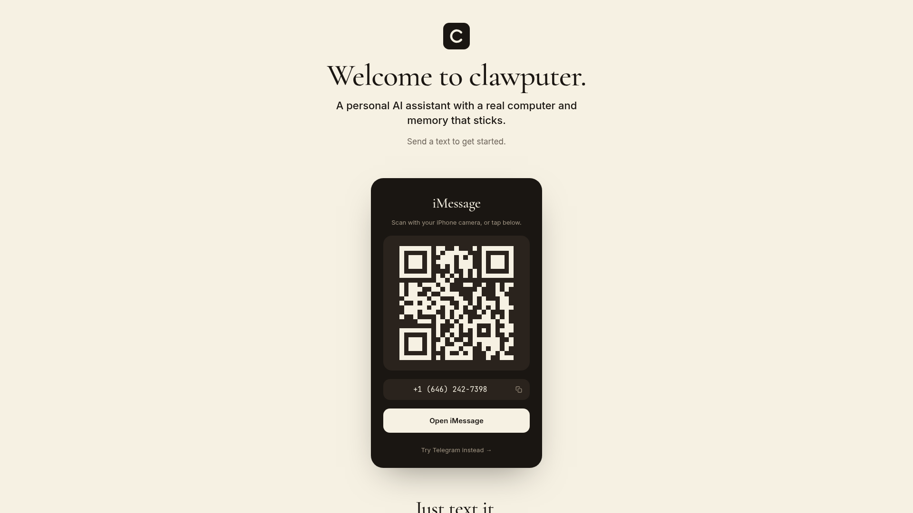
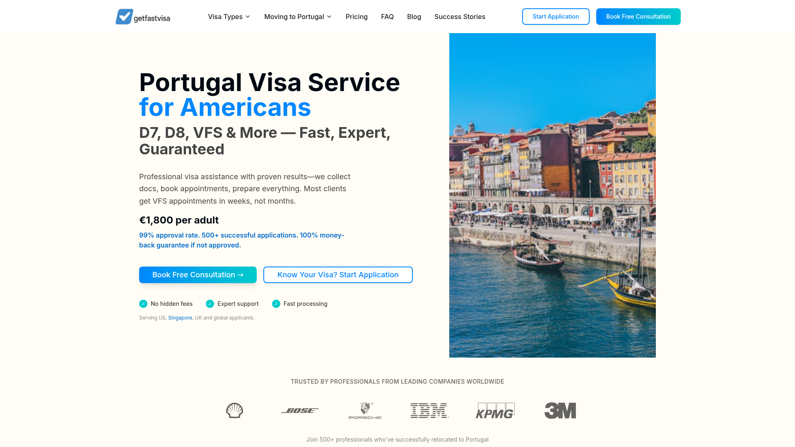
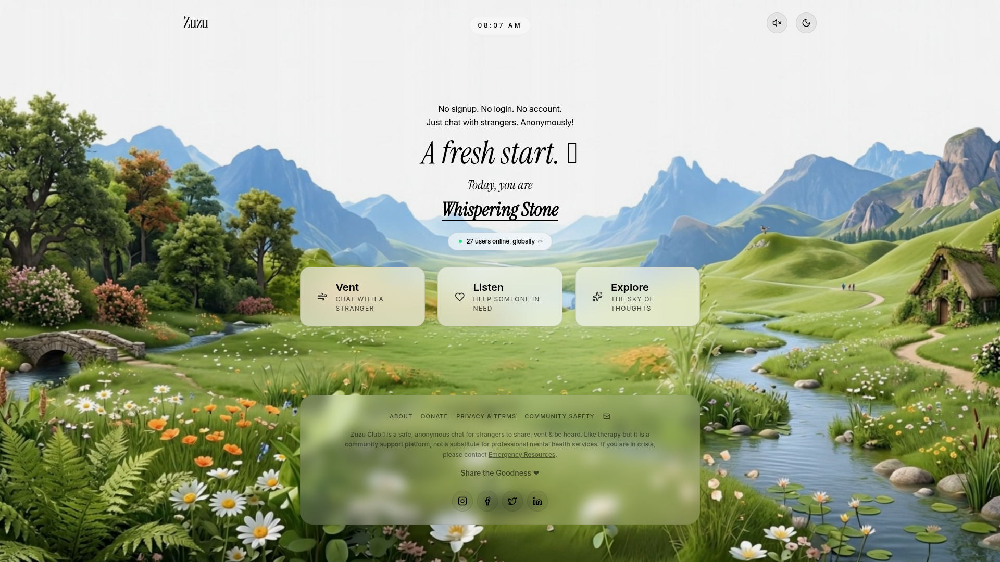

2026-05-19 周二
今日精选 · 5 个产品

drea - 播客广告屏蔽器
首款免费的 iOS 播客广告自动检测与屏蔽应用。利用 AI 识别播客中的广告片段并自动跳过，无需账户登录，彻底免费。

Lumis - 与斯多葛哲学家对话日记
一款创新日记应用，让用户通过与马可·奥勒留、塞内卡、爱比克泰德等斯多葛哲学家「对话」来完成日记记录。AI 以哲学家本人的声音和风格回应，并记忆你过去的对话。

Clawputer - 有真实记忆的个人 AI 助手
一款拥有真实计算机控制能力和持久记忆的个人 AI 助手桌面应用。不仅能对话，还能操控你的电脑完成任务，并在会话间保持记忆连续性。

GetFastVisa - AI 自动化签证预约
利用 computer-use AI agent 自动监测并抢占葡萄牙签证预约名额的服务。当有空缺时自动完成预约，彻底解放用户在签证预约网站上的人工蹲守。

Zuzu.club - 无账号即时陌生人对话
一个极简的匿名即时人际对话平台。无需注册、无需账号、无历史记录，3 秒内即可与真实陌生人展开对话。专为那些需要倾诉但不想正式社交的人设计。